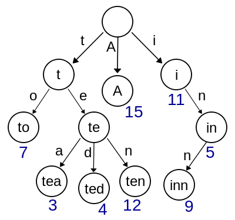

Blockchain Basics
What is a Blockchain?
Different types of databases / Data Systems Comparision
Digital Signatures
Hash and encryption
Merkle Tree
Merkle Patricia Trie — How Ethereum saves a state
Hash Cash
Record Keeping
Layers Of a Blockchain
Types of Consensus Algorithms
Proof of work major challenges
Byzantine Generals problem
Bitcoin Blockchain Network
Bitcoin Record keeping
Genesis block
Types of nodes
Bitcoin Block Anatomy
Mining in Bitcoin Blockchain
Consensus mechanism - Proof of work
SPV nodes
Byzantine Fault tolerance
Types of Blockchains
Smart Contract Evolution
Blockchain Architecture
Ethereum Architecture
Ethereum Accounts
Ether
Gas
Ethereum Block Anatomy
Consensus in Ethereum
Forking and Ommer blocks
Soft fork and Hard fork
State transition in Ethereum - Checks
State Transition in Ethereum - Process
Alt Coins vs tokens
Ethash
Geth, Geth CLI
Steps to setup private Ethereum Blockchain
Truffle
Wallets in ethereum
Metamask Setup
Token vs Crypto currency
ERC 20 Token
ERC 777 Token
ERC 721 Token
Ethereum Smart Contracts
Smart Contract deploymetn using Ganache
DApp Archotecture
Web3 provider
Hyperledger Architecture
Fabric network setup - Cryptomaterials and Channel Artifacts
Fabric node SDK
Chaincode
Chaincode deployment
---------------------------------------------------------------------------------
What is a Blockchain?
Let’s understand this further with a hypothetical example of a clothing store located in a small town. Since it’s the only store in the town, customers come in large numbers on a daily basis. Earlier, there were a few instances of mismatch in sales, inventory and revenue because the cashiers were inefficient in creating proper receipts, handling payments, and maintaining records. The store owner identified that having a centralised data store, that stores all the store information is causing the aforementioned issues. To address these issues, the store owner has implemented a unique mechanism. He set up four cash counters located near to each other. Every time a purchase/refund is concluded at any of the counters, the cashier at that counter rings a bell and announces the following details:
- transaction number of the day
- value of the sale/refund and
- the time of occurrence
This specific procedure is followed for every transaction recorded, also a representation of the validity rules. The cashier notes the details of all transactions in the daily ledger. Once the announcement is over, all other cashiers record this transaction in their respective ledgers. Basically, every cashier records all the transactions done by every other cashier. This way all of them have the record of all the transactions done in that particular day. The ringing of the bell signals the intent of the cashier to announce a transaction. All bells have unique sounds. When there is a conflict in determining the order of transaction, the bell that was rung first is given preference. Once the transaction is noted, the other cashiers ring the bell once to confirm the activity. There is an assistant to support every cashier, and the assistant’s role is to monitor the transactions noted by the cashiers. The store owner might reach out to any of the assistants to confirm the presence or validity of any transaction. Hence, the store owner can track the transactions that take place in real time. This process is followed every day of the week. The above scenario is synonymous with the concept of a blockchain. All transactions here are verified across a peer-to-peer network of cashiers. Absolute authority is not vested in any one cashier. Instead, it represents a decentralised system where all cashiers store the same copy of all the transactions that take place during the day. Also, the addition of any transaction to the registry is carried out via a consensus mechanism between the cashiers. The transaction log represents the registry of transactions or the distributed ledger. If any transaction is missed out by any of the cashiers, by announcing the transaction number every time the bell is rung, the other cashiers can rectify the order and ensure the ledger is consistent with other ledgers across the store. Hence, another way of describing a blockchain is a decentralised database of transaction records which is distributed over all the participating nodes in the network.
Blockchain, as you learnt, is a combination of decentralised and distributed database containing a registry of transactions that are distributed among peers or fellow participants in the network. The registry includes a long list of transactions and is continually updated with new transactions as they take place. Starting from the very first transaction, a bunch of transactions is grouped into a block as per a predefined block size (1MB in case of Bitcoin). Once the block size is achieved by one block, the next set of transactions forms another block which is then linked to the block previously formed. Over time, a series of blocks is formed where each block is connected to another block that was created just before it. Thus, we call this chain of blocks as the blockchain.
Different types of databases / Data Systems Comparision

A. CENTRALIZED SYSTEMS:
Example:
Wikipedia. Consider a massive server to which we send our requests and the server responds with the article that we requested. Suppose we enter the search term ‘junk food’ in the Wikipedia search bar. This search term is sent as a request to the Wikipedia servers (mostly located in Virginia, U.S.A) which then responds back with the articles based on relevance. In this situation, we are the client node, Wikipedia servers are the central server.Components of Centralized System –
- Node (Computer, Mobile, etc.).
- Server.
- Communication link (Cables, Wi-Fi, etc.).
Architecture of Centralized System –
- Client-Server architecture. The central node that serves the other nodes in the system is the server node and all the other nodes are the client nodes.
Use Cases –
- databases – all the data in one server for use.
- games like Need For Speed, GTA Vice City – an entire game in one system(commonly, a Personal Computer)
- development by deploying test servers leading to easy debugging, easy deployment, easy simulation
- Personal Computers
Organizations Using –
- National Informatics Center (India), IBM
B. DECENTRALIZED SYSTEMS:
Example –
Bitcoin. Let’s take Bitcoin for example because it is the most popular use case of decentralized systems. No single entity/organization owns the bitcoin network. The network is a sum of all the nodes who talk to each other for maintaining the amount of bitcoin every account holder has.Components –
- Node (Computer, Mobile, etc.)
- link (Cables, Wi-Fi, etc.)
Architecture of Decentralized System –
- architecture – all nodes are peers of each other. No one node has supremacy over other nodes
- architecture – One node can become a master by voting and help in coordinating of a part of the system but this does not mean the node has supremacy over the other node which it is coordinating.
Use Cases –
- Blockchain
- Decentralized databases – Entire databases split into parts and distributed to different nodes for storage and use. For example, records with names starting from ‘A’ to ‘K’ in one node, ‘L’ to ‘N’ in the second node, and ‘O’ to ‘Z’ in the third node Cryptocurrency
Organizations Using –
- Bitcoin, Tor network
C. DISTRIBUTED SYSTEMS:
Example –
Google search system. Each request is worked upon by hundreds of computers which crawl the web and return the relevant results. To the user, Google appears to be one system, but it actually is multiple computers working together to accomplish one single task (return the results to the search query).Components of Distributed System –
- Node (Computer, Mobile, etc.)
- link (Cables, Wi-Fi, etc.)
Architecture of Distributed System –
- peer-to-peer – all nodes are peers of each other and work towards a common goal
- – some nodes become server nodes for the role of coordinator, arbiter, etc.
- architecture – different parts of an application are distributed in different nodes of the systems and these nodes work together to function as an application for the user/client
Use Cases –
- SOA-based systems
- Multiplayer online games
Organizations Using –
- Apple, Google, Facebook.
Digital Signatures
A digital signature is a mathematical technique used to validate the authenticity and integrity of a message, software or digital document. It's the digital equivalent of a handwritten signature or stamped seal, but it offers far more inherent security. A digital signature is intended to solve the problem of tampering and impersonation in digital communications. Digital signatures can provide evidence of origin, identity and status of electronic documents, transactions or digital messages. Signers can also use them to acknowledge informed consent. In many countries, including the United States, digital signatures are considered legally binding in the same way as traditional handwritten document signatures.How do digital signatures work?
Digital signatures are based on public key cryptography, also known as asymmetric cryptography. Using a public key algorithm, such as RSA (Rivest-Shamir-Adleman), two keys are generated, creating a mathematically linked pair of keys, one private and one public. Digital signatures work through public key cryptography's two mutually authenticating cryptographic keys. The individual who creates the digital signature uses a private key to encrypt signature-related data, while the only way to decrypt that data is with the signer's public key. If the recipient can't open the document with the signer's public key, that's a sign there's a problem with the document or the signature. This is how digital signatures are authenticated. Digital signature technology requires all parties trust that the individual creating the signature has kept the private key secret. If someone else has access to the private signing key, that party could create fraudulent digital signatures in the name of the private key holder.What are the benefits of digital signatures?
Security is the main benefit of digital signatures. Security capabilities embedded in digital signatures ensure a document is not altered and signatures are legitimate. Security features and methods used in digital signatures include the following: Personal identification numbers (PINs), passwords and codes. Used to authenticate and verify a signer's identity and approve their signature. Email, username and password are the most common methods used. Asymmetric cryptography. Employs a public key algorithm that includes private and public key encryption and authentication. Checksum. A long string of letters and numbers that represents the sum of the correct digits in a piece of digital data, against which comparisons can be made to detect errors or changes. A checksum acts as a data fingerprint. Cyclic redundancy check (CRC). An error-detecting code and verification feature used in digital networks and storage devices to detect changes to raw data. Certificate authority (CA) validation. CAs issue digital signatures and act as trusted third parties by accepting, authenticating, issuing and maintaining digital certificates. The use of CAs helps avoid the creation of fake digital certificates. Trust service provider (TSP) validation. A TSP is a person or legal entity that performs validation of a digital signature on a company's behalf and offers signature validation reports. Other benefits to using digital signatures include the following:Timestamping. By providing the data and time of a digital signature, timestamping is useful when timing is critical, such as for stock trades, lottery ticket issuance and legal proceedings. Globally accepted and legally compliant. The public key infrastructure (PKI) standard ensures vendor-generated keys are made and stored securely. Because of the international standard, a growing number of countries are accepting digital signatures as legally binding. Time savings. Digital signatures simplify the time-consuming processes of physical document signing, storage and exchange, enabling businesses to quickly access and sign documents. Cost savings. Organizations can go paperless and save money previously spent on the physical resources and on the time, personnel and office space used to manage and transport them. Positive environmental impact. Reducing paper use also cuts down on the physical waste generated by paper and the negative environmental impact of transporting paper documents. Traceability. Digital signatures create an audit trail that makes internal record-keeping easier for business. With everything recorded and stored digitally, there are fewer opportunities for a manual signee or record-keeper to make a mistake or misplace something.
How do you create a digital signature?
To create a digital signature, signing software, such as an email program, is used to provide a one-way hash of the electronic data to be signed. A hash is a fixed-length string of letters and numbers generated by an algorithm. The digital signature creator's private key is then used to encrypt the hash. The encrypted hash -- along with other information, such as the hashing algorithm -- is the digital signature. The reason for encrypting the hash instead of the entire message or document is a hash function can convert an arbitrary input into a fixed-length value, which is usually much shorter. This saves time as hashing is much faster than signing. The value of a hash is unique to the hashed data. Any change in the data, even a change in a single character, will result in a different value. This attribute enables others to use the signer's public key to decrypt the hash to validate the integrity of the data. If the decrypted hash matches a second computed hash of the same data, it proves that the data hasn't changed since it was signed. If the two hashes don't match, the data has either been tampered with in some way and is compromised or the signature was created with a private key that doesn't correspond to the public key presented by the signer -- an issue with authentication.Digital Certificate
Digital certificate is issued by a trusted third party which proves sender’s identity to the receiver and receiver’s identity to the sender. A digital certificate is a certificate issued by a Certificate Authority (CA) to verify the identity of the certificate holder. The CA issues an encrypted digital certificate containing the applicant’s public key and a variety of other identification information. Digital certificate is used to attach public key with a particular individual or an entity. Digital certificate contains:-- Name of certificate holder.
- Serial number which is used to uniquely identify a certificate, the individual or the entity identified by the certificate
- Expiration dates.
- Copy of certificate holder’s public key.(used for decrypting messages and digital signatures)
- Digital Signature of the certificate issuing authority.
Digital certificate vs digital signature :
Digital signature is used to verify authenticity, integrity, non-repudiation ,i.e. it is assuring that the message is sent by the known user and not modified, while digital certificate is used to verify the identity of the user, maybe sender or receiver. Thus, digital signature and certificate are different kind of things but both are used for security. Most websites use digital certificate to enhance trust of their users| # | Feature | Digital Signature | Digital Certificate |
|---|---|---|---|
| 1 | Basics/Definition | Definition Digital signature is like a fingerprint or an attachment to a digital document that ensures its authenticity and integrity. | Digital certificate is a file that ensures holder’s identity and provides security. |
| 2 | Process/Steps | Hashed value of original message is encrypted with sender’s secret key to generate the digital signature. | It is generated by CA (Certifying Authority) that involves four steps: Key Generation, Registration, Verification, Creation. |
| 3 | Security Services | Authenticity of Sender, integrity of the document and non-repudiation. | It provides security and authenticity of certificate holder. |
| 4 | Standard | It follows Digital Signature Standard (DSS). | It follows X.509 Standard Format |
Hash and encryption
Classes of Cryptographic Algorithms
Cryptographic algorithms can be categorized into three classes. This categorization is defined on basis of the number of cryptographic keys that are required for the algorithm.- Hash Functions
- Symmetric-Key Algorithms
- Asymmetric-Key Algorithms
1 Hash Functions
Hash functions are the building blocks for modern cryptography. A hash function is a cryptographic algorithm which is used to transform large random size data to small fixed size data. The data output of the hash algorithm is called hash value or digest. The basic operation of hash functions does not need any key and operate in a one-way manner. The one-way operation means that it is impossible to compute the input from a particular output. The basic uses of hash functions are:- Generation and verification of digital signatures
- Checksum/Message integrity checks
- Source integrity services via MAC
- Derivation of sub-keys in key-establishment protocols & algorithms
- Generation of pseudorandom numbers
Encryption is a two step process used to first encrypt and then decrypt a message, hashing condenses a message into an irreversible fixed-length value, or hash. Two of the most common hashing algorithms seen in networking are MD5 and SHA-1. Hashing is used only to verify data; the original message cannot be retrieved from a hash. used to authenticate secure communications, a hash is typically the result of the original message plus a secret key. Hashing algorithms are also commonly used without a secret key simply for error checking. You can use the md5sum and sha1sum utilities on a Linux or Unix machine to experiment with hashing.
2 Symmetric-key algorithms
Symmetric-key algorithms also referred as secret-key algorithms use a single cryptographic key for encryption and decryption purposes. They convert data in a way that is problematic for an opponent to decrypt the data without the key. Symmetric keys are securely generated and distributed to the sender and receiver and are unknown to any other entity. But if a symmetric-key algorithm is being used by more than one receiver then the key has to be shared with all entities. If the key is compromised from one entity, communication of all the entities will be compromised. Symmetric Algorithms are further divided into Block & Stream algorithms. A block algorithm breaks the input into fixed-size blocks and then progresses the crypto operations. Stream algorithms perform “bit-by-bit” crypto operations. Primary purposes of symmetric key algorithms are:- Confidentiality is achieved as encryption and decryption is performed using single key.
- Integrity and source authentication is achieved by using Message Authentication Codes because the MAC is generated and validated by the same key.
- Generation of pseudorandom random numbers
3 Asymmetric-key algorithms
Asymmetric-key algorithms are commonly referred to as “public-key algorithms”. They use two mathematically associated keys knows as public and private keys. One key is used for data encryption, and the other is used for decryption of data. The combination of a public and private key is called a key pair. The private key is always kept secret by the owner. The public key is distributed to the public and everyone can access it. The private key cannot be deduced from the public key. The public key is mostly bound to an identity by a Certificate Authority. Asymmetric-key algorithms are mostly based on mathematical problems like integer factorization and discrete logarithm problem. Main uses of asymmetric algorithms are:- Creation of digital signatures
- To establish/distribute session keys such as in case of TLS protocol
Merkle Tree
The same method for constructing a tree from four transactions can be generalized to construct trees of any size. In bitcoin it is common to have several hundred to more than a thousand transactions in a single block, which are summarized in exactly the same way, producing just 32 bytes of data as the single merkle root. In Figure 7-4, you will see a tree built from 16 transactions. Note that although the root looks bigger than the leaf nodes in the diagram, it is the exact same size, just 32 bytes. Whether there is one transaction or a hundred thousand transactions in the block, the merkle root always summarizes them into 32 bytes.
To prove that a specific transaction is included in a block, a node only needs to produce log2(N) 32-byte hashes, constituting an authentication path or merkle path connecting the specific transaction to the root of the tree. This is especially important as the number of transactions increases, because the base-2 logarithm of the number of transactions increases much more slowly. This allows bitcoin nodes to efficiently produce paths of 10 or 12 hashes (320–384 bytes), which can provide proof of a single transaction out of more than a thousand transactions in a megabyte-size block.
In the following figure, a node can prove that a transaction K is included in the block by producing a merkle path that is only four 32-byte hashes long (128 bytes total). The path consists of the four hashes (noted in blue in Figure 7-5) HL, HIJ, HMNOP and HABCDEFGH. With those four hashes provided as an authentication path, any node can prove that HK (noted in green in the diagram) is included in the merkle root by computing four additional pair-wise hashes HKL, HIJKL, HIJKLMNOP, and the merkle tree root (outlined in a dotted line in the diagram).
Merkle Patricia Trie — How Ethereum saves a state
Leaving aside the network part, we could say that Ethereum is a state machine where transactions modify states on the Ethereum network. A state can be expressed as a key-value pair. Although there are several ways of representing a key-value pair, the Ethereum specification defines the Modified Merkle Patricia Trie (a.k.a MPT) as the method to save states.
Basically, MPT is a combination of Patricia trie and Merkle tree, with few additional optimizations that fit the characteristics of Ethereum. Thus, an understanding of the Patricia trie and Merkle tree should precede the understanding of MPT.
Patricia Trie
Patricia trie is a data structure which is also called Prefix tree, radix tree or trie. Trie uses a key as a path so the nodes that share the same prefix can also share the same path. This structure is fastest at finding common prefixes, simple to implement, and requires small memory. Thereby, it is commonly used for implementing routing tables, systems that are used in low specification machines like the router.
Merkle Tree
Merkle tree is a tree of hashes. Leaf nodes store data. Parent nodes contain their children’s hash as well as the hashed value of the sum of their children’s hashes. Since all the nodes except for leaf nodes contain a hash, the Merkle tree is also known as a hash tree.
 Finding out whether two different nodes have the same data or not can be efficiently done with the Merkle tree.
You first have to compare the Top Hash value of the two nodes. If they are the same, then the two nodes have same
data. For example, if you look at the picture above, when there are four nodes (L1, L2, L3, L4), you only need to
check whether they have the same Top Hash or not. If the Top Hash is different and you want to know which data is
different, you should compare Hash 0 with Hash1 and check which branch is different. By doing so, you will
eventually find out which data is different.
Finding out whether two different nodes have the same data or not can be efficiently done with the Merkle tree.
You first have to compare the Top Hash value of the two nodes. If they are the same, then the two nodes have same
data. For example, if you look at the picture above, when there are four nodes (L1, L2, L3, L4), you only need to
check whether they have the same Top Hash or not. If the Top Hash is different and you want to know which data is
different, you should compare Hash 0 with Hash1 and check which branch is different. By doing so, you will
eventually find out which data is different.
Merkle Patricia Trie

In the MPT, as well as in the Merkle tree, every node has a hash value. Each node’s hash is decided by the sha3 hash value of its contents. This hash is also used as the key that refers to the node. Go-ethereum uses levelDB, and parity uses rocksDB to store states. They are key-value storages. Keys and values saved in the storage are not the key-values of the Ethereum state. The value that is stored in the storage is the content of MPT node while the key is the hash of this node.
Key-values of the Ethereum state are used as paths on the MPT. Nibble is the unit used to distinguish key values in the MPT, so each node can have up to 16 branches. Additionally, since a node has its own value, a branch node is an array of 17 items composed of 1 node value and 16 branches.
A Node that does not have a child node is called a leaf node. A leaf node consists of two items: its path and value. For example, let’s say the key “0xBEA” contains 1000 and the key “0xBEE” contains 2000. Then, there should be a branch node with the “0xBE” path, and, under that node, two leaf nodes with two paths (“0xA” and “0xE”) will be attached.

In the MPT, there is one more type of nodes apart from the branch nodes and the leaf nodes. They are extension nodes. An extension node is an optimized node of the branch node. In the Ethereum state, quite frequently, there are branch nodes that have only one child node. This is the reason why the MPT compresses branch nodes that contain only one child into extension nodes that have a path and the hash of the child.
Since both the leaf node and the extension node are an array of two items there should be a way to distinguish these two different nodes. In order to make such distinction, the MPT adds a prefix to the path. If the node is a leaf and the path consists of even number of nibbles, you add 0x20 as a prefix. If the path consists of odd number of nibbles, you should add 0x3 as a prefix. If the node is an extension node and the path consists of even number of nibbles, you add 0x00 as a prefix. If it consists of odd number of nibbles, you should add 0x1 as a prefix. Because the path that consists of an odd number of nibbles gets a nibble as prefix and the path that consists of an even number of nibbles gets two nibbles as a prefix, a path is always expressed as a byte.
Hash Cash
A hashcash stamp constitutes a proof-of-work which takes a parameterizable amount of work to compute for the sender. The recipient (and indeed anyone as it is publicly auditable) can verify received hashcash stamps efficiently. Hashcash was invented by Adam Back in 1997
At this point it is most widely used as the bitcoin mining function.
The email anti-spam tool, like the proof-of-work algorithm, is also called hashcash and is used to create
stamps to attach to mail to add a micro-cost to sending mail to deter spamming.
So, hash cash is basically a proof of work the sender of an email has to do before sending an email. The sender has to calculate the hash of the email data and make sure that the calculated hash satisfies a particular condition. This limts the scope of spam emails. Please keep this technique in mind. This is because this is now being used in Blockchain Technology for something known as mining of blocks.
The main use of the hashcash stamp is as a white-listing hint to help hashcash users avoid losing email due to content based and blacklist based anti-spam systems.Hashcash source code includes a library form, and also the algorithm is extremely simple to code from scratch with the availability of a hash library. Verification can be done by a human eye (count leading 0s) even with availability of common preinstalled command line tools such as sha1sum. The algorithm works with a cryptographic hash, such as SHA1, SHA256 or coming SHA3 that exhibits 2nd-preimage resistance. Note that 2nd-preimage resistance is a stronger hash property than the collision resistance property.
Record Keeping
There are several methods in which records are maintained in networks. One of the basic methods is the Account/Balance model wherein balance related to every account is maintained. Bitcoin uses a different mechanism for record keeping.
Bitcoin uses the concept of unspent transaction output (UTXO) for record keeping. Every transaction in a bitcoin is based upon an unspent transaction output (UTXO). Whenever a transaction is performed in bitcoin, it primarily consumes existing UTXOs called as inputs and creates new UTXOs called outputs. The outputs generated from a transaction can be utilized further in the network by the node.
There are two ways to get the UTXO in a bitcoin network: Either from another node in the network or as a network reward. Let’s analyze a sample transaction in the network and see how the UTXO model works.
Each UTXO corresponds to a particular addreess i.e a particular public key. The corresponding private key is used to unlock and spend that UTXO. This private key corresponds to the owner of the UTXO which is required to unlock and spend that UTXO. Once spent, that UTXO is again locked with the public key of the new owner. Now since it is locked with the public key of the new owner, it requires the private key of the new owner to be unlocked and spent again.
Transaction fee is the fee paid to the miner over and above the reward it gets for mining the block. Try to answer the questions below to aid your understanding.
Layers Of a Blockchain
- A blockchain network has the following layers:
- Hardware Layer: The hardware layer can be a cloud or a server that hosts the entire network.
- Ledger or Fabric Layer: It forms the base of the blockchain network and constitutes of blocks also known as a ledger that hold the transaction data.
- Smart Contract or Logic Layer: It forms the business logic of the network and ensures that the network follows all the rules and regulations that govern the blockchain network.
- Interface layer: It is the set of API's that are used to communicate with the blockchain and get the required result such as retrieval of data, the addition of data etc.
- User Interface or Application Layer: This layer is the front end of the application and runs the entire network. It interacts with the rest of the layers.
Types of Consensus Algorithms
Proof of work major challenges
Proof of work faces three major challenges:
- It is energy inefficient: In proof of work millions of miners try to mine one block, and only one miner is successful. Rest of the energy spent by the miners goes to waste.
- It is computationally heavy: Proof of work requires a lot of computation by the miners to mine one block successfully.
- 51% attack: In case more than 51% of the nodes in the network are malicious the network could become unstable.
Byzantine Generals problem
The Byzentine Generals problem occurs when a malicious node propagates wrong message or tampered transactions in the network that could compromise the security of data in the blockchain network. The blockchain network needs to be tolerant to such activities and needs to ensure that all the transaction data in the network is tamper free. Such networks are called as Byzentine Fault Tolerant Networks and they use the Byzentine fault tolerant consensus.
For a network to be byzantine fault tolerant the number of malicious nodes in the network should be less that
1/3rd of the total nodes in the network. Whenever a node receives two conflicting messages, it goes for a
majority vote and accepts the message which comes from majority number of nodes. To ensure that the correct
message is accepted by the nodes in the network the total number of malicious nodes needs to less than 33.33%
or 1/3rd of the network. Proof-of-work is a BFT consensus mechanism provided the 51% attack and pool mining
does not happen.
To overcome the challenges faced by proof of work, there are other mechanisms being devised.
The proof of work is a very energy intensive mechanism and requires a lot of computational power. One one node comes out as a winner and rest all the energy used by other nodes is wasted in the proof of work mechanism. The evolution of consensus mechanisms is going and one of the methods to overcome the challenges of proof of work is to choose a leader node based on the stake in the network. It is very unlikely for a node to be malicious if it has the maximum stake in the network
Bitcoin Blockchain Network
Bitcoin Record keeping
Genesis block
Types of nodes
-
There are three types of nodes in the bitcoin blockchain network:
- Miner nodes: They create the blocks in the network
- Full nodes: They store the details of all the blocks in the network
- SPV nodes (simplified payment verification node): They are nodes that store only the partial details of the blocks in the network
Full nodes keep a complete copy of all the bitcoin blockchain with all the transactions. This copy is built by the full node itself from the beginning (genesis block) by verifying and adding independently all the transactions to it. So a full node independently and authoritatively verifies all the transactions by itself without having any need of external resources. This node receives from the network informations about new blocks and transactions but verifies independently any data received while adding them to the local copy of the blockchain.
This means that a full node gives you a complete independence from any centralization or external resource, giving you the possibility to access to the system authoritatively and without having to rely on external servers.
Obviously this comes with a price. Infact the full node needs to have a high amount of storage space for storing all the blockchain locally and enough resources to run all the needed verifications. At actual rate with a 2GB ram computer you may take a week for all the blockchain to be completely synced and verified locally by a new full node running the bitcoin core software. Infact only the genesis block is embedded into the software, all the other blocks are added to the local blockchain step by step while starting the node for the first time.
Many bitcoin clients are designed to run into smartphones, tables and machines with low resources and storage. For those devices a simplified payment verification system runs to allow them to operate without the full blockchain stored locally.
SPV nodes, infact, download the block headers only and exclude the transactions of each block. So they have a chain of blocks without transactions and this makes possible to have a resulting data amount stored locally over thousand times lower in size.
They rely on peers to provide parts of the blockchain when necessary. So how they can do to verify a transaction? They use the link between the transaction which they are interested in and the block that contains it, using the merkle path. To protect the spv node against the possibility of a double spending attack against the spv itself, the nodes must connect randomly to other different nodes to have the maximum probability to get correct informations. This is why, to be completely sure about a transaction, only a full node can be used.
It’s very important to consider this behavior can create a privacy risk. Why? because spv nodes must ask about specific transactions and this makes possible that some software agent which is monitoring the network can correlate the asked transactions to the user running the wallet.
In order to mitigate this risk, the bloom filter can be used by spv nodes. The bloom filters can ask for specific transactions matching a pattern rather then about a specific transaction. SPV nodes can therefore use such filters to filter transactions they receive from peers selecting only the needed informations and without having to disclose with address they are interested in. In any case using a SPV node instead of a full node gives the user a weaker privacy and security and therefore the use of such nodes must be evaluated on the base of the amount held on accounts connected. For higher held amount of bitcoin, that user plans to keep long time, it’s very important to use a dedicated full node connected with a TOR network connection in such a way to benefit of enhanced security and privacy for their funds.
Bitcoin Block Anatomy
Blocks are the fundamental components of the blockchain. The word "block" is an interesting way to think about the information it stores; but what a block actually is, might be a little different than what you expect. In this segment, we'll discuss what blocks are, and the various elements that are included in the block.
A blocks header is comprised of the following components:
- Merkle root - aggregation of all the hash values of the transactions into a single hash value.
- Timestamp - Timestamp of the block creation time.
- Nonce - Random Value that is altered/updated to try different permutations to achieve the required difficulty level. You will learn more about this in the upcoming section.
- Transaction counter - Count of the number of transactions in a block.
Mining in Bitcoin Blockchain
The process of mining means that a new block is created and added to the blockchain. Every miner creates a block from the transaction existing in its transaction pool.
- For a block to be valid and added to the network, the miner needs to solve a puzzle which is defined as
below in the case of bitcoin blockchain.
Hash of the block header < Value Hash of the header is the hash of all the data present in the header appended together. - In case the above condition is not met, the miners need to recompute the hash.
- To recompute the hash nonce is used whose value is changed in every iteration to arrive at a new hash. This is because all the other data in the block such as time stamp, Merkel root, number of transactions etc. are all fixed and can not be changed.
- To change the hash the only thing that can be changed is the nonce value. The difficulty to attain the acceptable hash in the network is termed as the difficulty of the network. Once the condition is satisfied, the block becomes a valid block.
- The miner who calculated a valid hash first is allowed to claim the creation of the block
A miner competes with other miners in the network to form a block. The miner which is able to first generate a
block in the network is given a block reward. The block reward started from 50 BTC and currently, the miner
earns a block reward of 12.5 BTC for every block.
Once a block gets created it is propagated to the entire network and all the peers don’t add the block as such
to their respective blockchains. Each peer node performs some validation on the incoming block.
The block header also contains a previous hash pointer of the block which precedes this block. Remember that blockchain is a chain of blocks that are connected by this previous hash pointer also known as the previous hash. The previous hash acts as a link between the blocks. Each node in the network checks whether the last block in its blockchain has the same hash as the previous hash pointer of the incoming block, it adds the block otherwise not.
Consensus Mechanism - Proof of work
The blockchain is a trustless environment where nobody has to trust each other, and there is no central authority to ensure trust between the transacting parties. So how does blockchain ensure that valid transaction performed in the network? Blockchain employs a set of validation checks known as consensus mechanism for the validity of transactions.
In the blockchain, mathematical algorithms are used to verify transactions and ensure trust between transacting parties. Transacting parties have to trust the output achieved using these mathematical algorithms. These algorithms together are known as the consensus mechanism in the blockchain. The consensus can for a transaction or for an entire block. The consensus for the transaction verification of transaction includes the checks for the following:
- Sender Balance
- Valid Authority
- Valid signatures
Hash(HDR) < Difficulty Level
The consensus mechanism is difficult to achieve and easy to verify. The
above-mentioned consensus mechanism is known as proof of work. In the proof of work consensus, miner nodes
have to solve a computationally difficult problem to compute the hash for the current block. The network
sets
a difficulty target for the miners. This difficulty level plays a vital role in the consensus as well as
the
mining process.
The difficulty value, also known as the target value, sets the difficulty level of the network. The difficulty level is used to regulate the mining of blocks in the network. The bitcoin network has a block creation time set to 10 mins and this value has to be maintained. The difficulty value adjusts with every block creation such that the value of block creation remains constant.
The formula for calculation of difficulty level in bitcoin blockchain network is: Difficulty Level = (Previous Difficulty Level * 20160) / (Time taken to mine last 2016 block)In case the time taken for the last block is greater than 10, the new value of difficulty level is lower than the previous one such that the blocks are created faster. In case the time taken for the last block is less than 10, the new value of difficulty level is greater than the previous one such that the blocks are created slower.
Comprehension:In proof of work mechanism, the consensus is achieved using an algorithm. Let us suppose miner node have computed the hash of the current block and have published it to the entire network. All other nodes in the network follow a set of rules to validate a block. Once all of the nodes have checked the validity of the block and found it to be valid, they give their consensus and block is added to the blockchain. The functions performed while validating a node are given below:
- Check if block with same hash has already been received.
- Check if there is a block in the already existing blockchain whose hash is previous.hash (current block).
- Check if the hash of the current block satisfies the difficulty level.
- Check if the timestamp of the current block is greater than the timestamp of the previous block.
- Update the current state of the blockchain new block number = parent block number + 1.
- Broadcast updated blockchain to the network.
SPV nodes
The primary purpose of having SPV nodes is to validate the transactions without having computationally intensive machines. The SPV nodes just store the block headers and can validate whether a transaction is present in a block or not. They don’t have the entire blockchain data and use the Merkel Root to arrive at a conclusion regarding a transaction.
The use of SPV nodes is done due to the fact that proof of work is computationally heavy and requires a lot of resources by the nodes. This is one of the challenges that has prompted developers to think of alternative solutions to proof of work.
Byzantine Fault tolerance
Types of Blockchains
There are 4 types of blockchains
- Public Blockchain
- Permissioned Blockchain
- Private Blockchain
- Consortium Blockchain
Public permissionless Blockchains: A public permissionless blockchain is free for anyone to join or leave. A Bitcoin Blockchain is the best example of a public permissionless network. This type of network provides anonymity, immutability and transparency but compromises on efficiency. Bitcoin and Ethereum are public blockchains.
Permissioned Blockchains: A public permissioned blockchain is an intermediate between a private and a public network. It values efficiency and immutability more than transparency and anonymity. In such a blockchain, each participating member is aware of the identities of the other members in the network. For example, the Goods and Services Tax (GST) network in India would be the most suitable for a permissioned Blockchain since it is operated by known entities and all the participants are verified before they join the network.
However, none of the Blockchains mentioned above will be suitable for the India Lending Blockchain network. Permissionless Blockchains do not provide the identity of the participants and lack in efficiency. On the other hand, public permissioned Blockchains are exposed to the public at large, even though they restrict access, thus raising concerns over the security of the network, since they do not provide anonymity of the participants. So, in the case of a GST network, you would not want other taxpayers in the country to know the details of your tax filings.
Private Blockchains: A private blockchain is one which is operated and managed by a single entity. Blockchains of this type are generally applicable in the case of conglomerates where the parent company runs the network for the underlying group of companies. In such situations, they value efficiency more than anonymity, transparency and immutability. If we consider the India Lending Blockchain, then RBI could be considered the entity that has supreme authority over the entire network. However, this raises the question of a single entity being given too much power.
Consortium Blockchains: A consortium blockchain is largely similar to a private Blockchain, but it differs when you consider who controls or manages the network. Instead of concentrating all the power on a single entity, authority is distributed across two or more participants. This scenario is also suitable for the India Lending Blockchain where authority can be distributed between RBI and a few of the major banks so that benefits can be ensured for all the members.
Now, let us summarise the key differences between the various types of Blockchains.| Type | Anonymity | Transparency | Immutability | Efficiency | Confidentiality | Throughput | Finality Turnaroud Time (TAT) |
|---|---|---|---|---|---|---|---|
Smart Contract Evolution
Blockchain Architecture
Ethereum Architecture
Ethereum Accounts
An Ethereum account is an entity with an ether (ETH) balance that can send transactions on Ethereum. Accounts can be user-controlled or deployed as smart contracts.
ACCOUNT TYPES
Ethereum has two account types:
- Externally owned Accounts
- Contract Accounts / Internal Accounts
Key differences
Externally-owned Account
Creating an account costs nothing Can initiate transactions Transactions between externally-owned accounts can only be ETH/token transfersContract Account
Creating a contract has a cost because you're using network storage Can only send transactions in response to receiving a transaction Transactions from an external account to a contract account can trigger code which can execute many different actions, such as transferring tokens or even creating a new contractEthereum accounts have four fields:
1.nonce –
a counter that indicates the number of transactions sent from the account. This ensures transactions are only processed once. In a contract account, this number represents the number of contracts created by the account2.balance –
the number of wei owned by this address. Wei is a denomination of ETH and there are 1e+18 wei per ETH.3.codeHash –
this hash refers to the code of an account on the Ethereum virtual machine (EVM). Contract accounts have code fragments programmed in that can perform different operations. This EVM code gets executed if the account gets a message call. It cannot be changed unlike the other account fields. All such code fragments are contained in the state database under their corresponding hashes for later retrieval. This hash value is known as a codeHash. For externally owned accounts, the codeHash field is the hash of an empty string.4.storageRoot –
Sometimes known as a storage hash. A 256-bit hash of the root node of a Merkle Patricia trie that encodes the storage contents of the account (a mapping between 256-bit integer values), encoded into the trie as a mapping from the Keccak 256-bit hash of the 256-bit integer keys to the RLP-encoded 256-bit integer values. This trie encodes the hash of the storage contents of this account, and is empty by default.
Ether
Gas
Ethereum Block Anatomy
Consensus in Ethereum
Forking and Ommer blocks
Soft fork and Hard fork
State transition in Ethereum - Checks
State Transition in Ethereum - Process
Alt Coins vs tokens
Ethash
Geth, Geth CLI
Steps to setup private Ethereum Blockchain
Truffle
Wallets in ethereum
Metamask Setup
Token vs Crypto currency
ERC 20 Token
ERC 777 Token
ERC 721 Token
Ethereum Smart Contracts
WHAT IS A SMART CONTRACT?
A "smart contract" is simply a program that runs on the Ethereum blockchain. It's a collection of code (its
functions) and data (its state) that resides at a specific address on the Ethereum blockchain.
Smart contracts are a type of Ethereum account. This means they have a balance and they can send transactions
over the network. However they're not controlled by a user, instead they are deployed to the network and run
as
programmed. User accounts can then interact with a smart contract by submitting transactions that execute a
function defined on the smart contract. Smart contracts can define rules, like a regular contract, and
automatically enforce them via the code. Smart contracts can not be deleted by default, and interactions with
them are irreversible.
PERMISSIONLESS
Anyone can write a smart contract and deploy it to the network. You just need to learn how to code in a smart
contract language, and have enough ETH to deploy your contract. Deploying a smart contract is technically a
transaction, so you need to pay your Gas in the same way that you need to pay gas for a simple ETH transfer.
Gas costs for contract deployment are far higher, however.
- Ethereum has developer-friendly languages for writing smart contracts:
- Solidity
- Vyper
- Yul
- Yul+
SOLIDITY
Object-oriented, high-level language for implementing smart contracts.
Curly-bracket language that has been most profoundly influenced by C++.
Statically typed (the type of a variable is known at compile time).
Supports:
Inheritance (you can extend other contracts).
Libraries (you can create reusable code that you can call from different contracts – like static functions in
a
static class in other object oriented programming languages).
Complex user-defined types.
A DIGITAL VENDING MACHINE Perhaps the best metaphor for a smart contract is a vending machine, as described by Nick Szabo. With the right inputs, a certain output is guaranteed. To get a snack from a vending machine: money + snack selection = snack dispensed This logic is programmed into the vending machine. A smart contract, like a vending machine, has logic programmed into it. Here's a simple example of how this vending machine might look like as a smart contract:
pragma solidity 0.8.7;
contract VendingMachine {
// Declare state variables of the contract
address public owner;
mapping (address => uint) public cupcakeBalances;
// When 'VendingMachine' contract is deployed:
// 1. set the deploying address as the owner of the contract
// 2. set the deployed smart contract's cupcake balance to 100
constructor() {
owner = msg.sender;
cupcakeBalances[address(this)] = 100;
}
// Allow the owner to increase the smart contract's cupcake balance
function refill(uint amount) public {
require(msg.sender == owner, "Only the owner can refill.");
cupcakeBalances[address(this)] += amount;
}
// Allow anyone to purchase cupcakes
function purchase(uint amount) public payable {
require(msg.value >= amount * 1 ether, "You must pay at least 1 ETH per cupcake");
require(cupcakeBalances[address(this)] >= amount, "Not enough cupcakes in stock to complete this purchase");
cupcakeBalances[address(this)] -= amount;
cupcakeBalances[msg.sender] += amount;
}
}